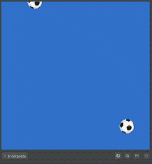

Дуже часто в іграх використовують функції отримання випадкових чисел. Pilas Engine містить дуже просту функцію для цих цілей з назвою pilas.azar:
Функція pilas.azar повертає випадкове число між двома числами. Наприклад:
Важливо відзначити, що діапазон значень включає граничні значення. У попередньому випадку функція може повернути 1, 2, 3, 4 або 5.
Функція pilas.azar може використовуватися для визначення початкової позиції актора таким чином, що це буде непередбачувано для гравця.
Наприклад, припустимо, що ми хочемо створити акторів типу Pelota і "скидати" їх з верхньої частини екрана таким чином:

Для цього ми можемо створити акторів за допомогою функції cada_segundo на сцені. І, у свою чергу, кожному створеному актору ми повинні призначити позицію x випадково, а саме: